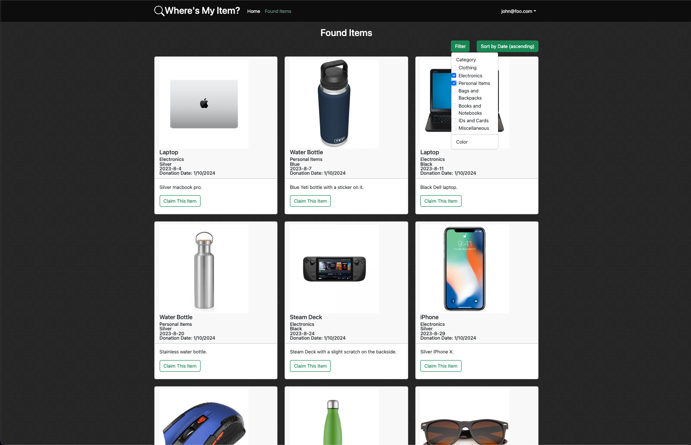
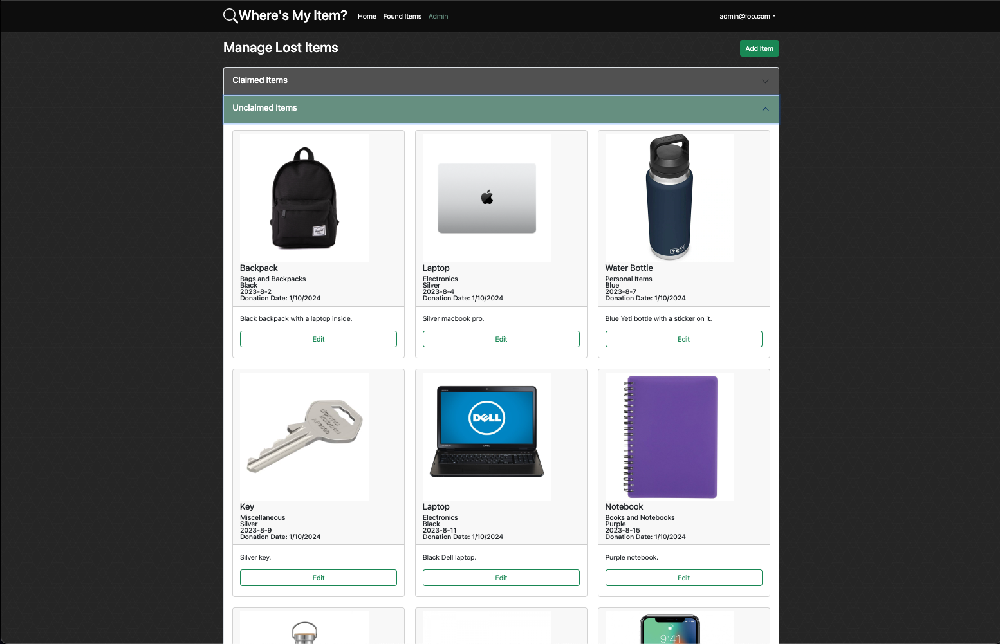

I collaborated with a team of four peers to design and develop a website named Where’s My Item? as my final project in ICS 314 Software Engineering at UH Manoa. “Where’s My Item?” serves as a web application designed to facilitate the process of finding and claiming lost items on the UH Manoa campus. The site allows the UH Manoa Lost Item office to list found items, providing students with a platform to search for and potentially reclaim their lost possessions. Users can browse a comprehensive list of found items, filter them based on category, submit claims for specific items, and provide necessary details for verification. Admins can manage items and view claims associated with them, ensuring a streamlined process for item recovery. The site aims to automate and simplify the lost and found process, enhancing the overall efficiency and user experience.
The technology stack employed for the development of “Where’s My Item?” incorporates contemporary web technologies to establish a robust and dynamic web application. The foundation of the stack lies in the use of Meteor, a full-stack framework for JavaScript-based implementation of both client and server code. React is used for its component-based UI implementation and routing, facilitating the creation of reusable and scalable frontend elements. The React Bootstrap CSS Framework is leveraged for UI design, offering pre-designed and responsive components that seamlessly integrate with React. The database component relies on MongoDB, a NoSQL database that allows for efficient storage and retrieval of data in our web application.
We followed the Agile methodology in our development process, using the iterative process to foster collaboration, and adaptability. Adopting this approach allowed us to divide the development of “Where’s My Item?” into distinct milestones, each contributing to the project’s evolution.
In Milestone 1, our focus was on creating a solid foundation for the web application. We successfully deployed the initial landing page, providing a starting point for subsequent development. This milestone incorporated mockups and aimed to establish the basic structure and user interface design.
During Milestone 1, I crafted a mockup for the Admin Page, designed to allow administrators to manage lost items. The items were categorized into those with claims and those without, streamlining the admin’s ability to navigate through and manage claims effectively. Additionally, I designed a mockup for the item card, intended for displaying items across multiple pages in a standardized format.
Moving to Milestone 2, our focus shifted to implementing the core functionality of our application. We dedicated efforts to fine-tune each page, ensuring it operated as intended while maintaining consistency with our overarching site style. To test functionality, we incorporated hardcoded data, deferring the database implementation to the subsequent milestone.
During Milestone 2, I undertook the implementation of the Admin page alongside the Add and Edit Item pages. My primary focus was on presenting all items in a user-friendly and easily readable format.

For Milestone 3, our goals included further functionality enhancements, the completion of outstanding pages, and refining the site based on community feedback.
In Milestone 3, I took on the implementation of MongoDB for items, employing the subscriber-publisher model to ensure seamless live updates. Additionally, I contributed to updating the site’s instructions, incorporating valuable insights gathered from community feedback.
In conclusion, the “Where’s My Item?” project provided a holistic learning experience, encompassing technical skills, teamwork dynamics, and the application of agile principles in real-world software engineering. It illuminated the complexities and nuances involved in the development lifecycle while reinforcing the significance of adaptability, collaboration, and a user-focused mindset.